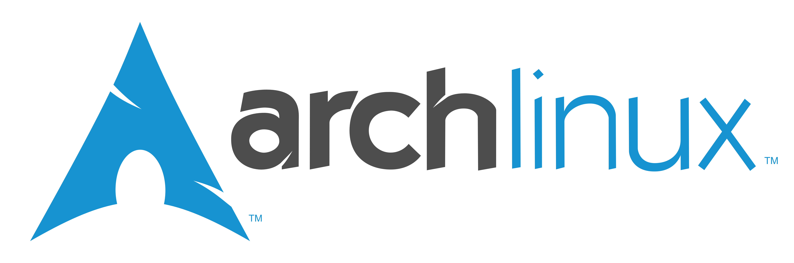

archlinux安装注意事项
本文最后更新于：2024年2月21日 晚上

archlinux introduce
Arch Linux is an independently developed, x86-64 general-purpose Linux distribution that is known for its simplicity and minimalism. It follows a rolling-release model which means that it does not have “major releases” of completely new versions of its system; regular system updates will allow users to obtain the latest Arch software. The default installation is a minimal base system, allowing users to add only the packages they need purposefully.
It uses pacman, a package manager written specifically for Arch Linux, to install, remove, and update software packages. The distribution is known for its comprehensive documentation, provided by a community-run wiki called the ArchWiki.
Arch Linux was started by Judd Vinet in March 2002, inspired by another minimalist distribution called CRUX. The name “Arch” was chosen because it means “the principal,” as in “arch-enemy.” Initially available only for 32-bit x86 CPUs, it released its first x86_64 installation ISO in April 2006.
The project has seen a transition of leadership and significant changes over time, including the adoption of systemd as its init system in 2012, the end of support for i686 architecture in 2017 (with Arch Linux 32 available as a community derivative for i686 hardware), and the introduction of Pacman 6.0 in late 2021 which enabled parallel downloads. As of February 2022, the distribution also began offering debug packages.
archlinux介绍
Arch Linux (/ɑːrtʃ/) 是一个独立开发的 x86-64 架构通用 GNU/Linux 发行版，它致力于通过滚动更新来提供大多数软件的最新稳定版本。默认安装是一个最小的基本系统，用户可以根据需要自行添加所需的软件。Arch Linux 使用 pacman 作为其包管理器。
Arch Linux 采用滚动更新模式，努力为用户维护软件的最新稳定版本，除非需要合理地避免系统包损坏。同时，Arch Linux 以社区 Wiki 的形式提供文档，称为 ArchWiki，供用户查阅各种信息和教程。
Arch Linux 的历史可以追溯到加拿大程序设计师兼吉他手 Judd Vinet，他从 2001 年早期开始开发 Arch Linux，并在 2002 年 3月 11 日正式发行了 0.1 版本。2007 年下半年，Judd Vinet 退出了 Arch Linux 的开发，由 Aaron Griffin 接手。2012 年 7 月发行的 Arch Linux 安装 ISO 映像开始放弃旧的安装框架转为使用不同的辅助脚本，并逐步开始将初始化系统迁移至 systemd。
安装常用软件
1 | |
常见问题
xrdp
查看 /var/log/xrdp.log 和 /var/log/xrdp-sesman.log。前者是 xrdp 程序本身的日志，而后者是 xrdp-sesman（会话管理器）的日志。前者负责处理 RDP 协议本身，通常不太可能出现问题（如果出问题，systemd 应该会报告启动失败）；后者负责启动 Xorg 服务器及桌面管理器，问题一般都会出在这一环。如果遇到问题，应该首先查看 xrdp-sesman.log，检查是否成功启动了 Xorg 服务器。
Steps to fix:
- Run these commands on the target system
sudo systemclt set-default multi-user.target
sudo reboot - Attempt to reconnect using your RD client